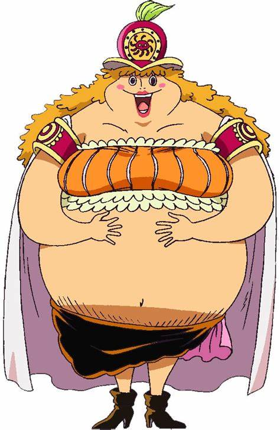

Cosmos
Cosmos is a mythical character in the One Piece universe, known as the Guardian of the Stars. With a celestial-themed Devil Fruit power, Cosmos wields control over stardust and can create dazzling, destructive constellations to protect his crew and allies.
Cosmos is a calm and wise leader, often guiding others with his knowledge of the universe and the mysteries of the Grand Line.